4
Working with Vias
Via definitions must exist in the technology file in order to be available for interactive and assisted routing.
This chapter describes the following topics:
- Specifying a Valid Via List
- Specifying Via Parameters Calculation Mode
- Changing Layers and Selecting Vias
- Inserting Vias Automatically
- Fanning Out Wires to Vias
- Using Via Assistance
- Creating an Array of Vias
- Stacking Vias
- Changing Via Cut Color
In 20nm, the cdsGenVias are supported by wire editor. For more information, refer to cdsViaDevice.
Specifying a Valid Via List
The vias that are available for wire editing and creation are determined from the Via constraint group specified in the Create Via section in the validVia list in the selected constraint group will be used when creating wires. See Constraint Groupsfor more information about defining constraint groups.
In addition to standard and custom viaDefs, the interactive and assisted routing commands, such as Create Wire, Point to Point, Guided Routing, and Finish Wire, support standard and custom via variants.
For information about adding customized vias to the technology file, see
Specifying Via Parameters Calculation Mode
For creating a via and the via enclosure explanation, the interactive and assisted routing commands, such as Create Wire, Point to Point routing, Guided Routing, and Finish Wire, use the Via Parameters Calculation mode that is specified in the Wire Editing section of the
- When Min Rules & ViaDef is specified, the interactive and assisted routing commands use the larger via parameter value found in the minimum rules and the viaDef.
- When Minimum Rules is specified, the interactive and assisted routing commands use via parameter values from the minimum rule set. If a parameter value is not found in the minimum rules, value from the viaDef is used.
- When ViaDef Defaults is specified, the interactive and assisted routing commands use via parameter values from the viaDef which are legal. Whenever a parameter value in the viaDef is less than the minimum rule, a warning is issued and the value of the minimum rule is used instead.
Changing Layers and Selecting Vias
For more information about creating wires, see Creating Wires.
You can now change a layer at any time during interactive routing. While creating a wire, you can change the layer after dropping a via or a via stack by selecting outgoing wire layer in the Palette Assistant. To change the wire layer while creating a wire:
I) Use the Rotate Via(s) Cut Pattern and Via Down to <layer name> commands on the Create Single Wire Context-Sensitive Menu when the Create Wire or Create Bus command is active:
- Start the Create Wire command.
- Start creating the wire by digitizing the wire points.
- Right-click to select Via Upto <layer name> or Via Down to <layer name> to change the wire layer to a higher or lower layer, respectively.
-
Continue digitizing points on the new layer.
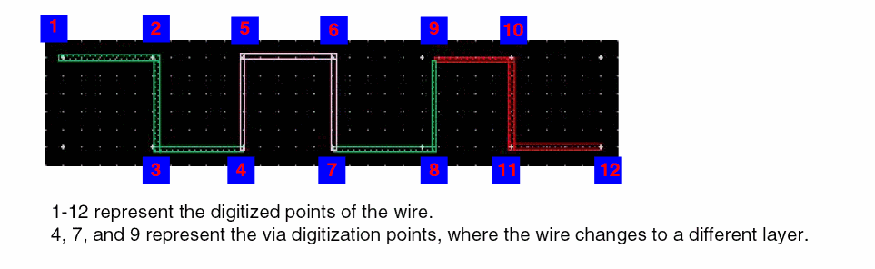 -
Complete the command by pressing
Esc.
Notice that the center of layer enclosures of the created vias coincides the intersecting centerlines at the endpoints of the two wire pathSegs on different layers. This is shown in the figures below. The first figure shows a zoomed-in view of point 7 of the wire above and the second figure shows the zoomed-in view of point 9.
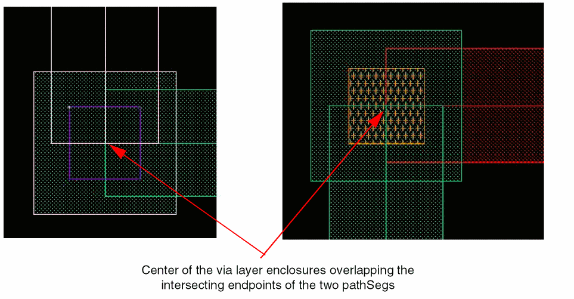
II) By using the Select Via command on the Create Single Wire Context-Sensitive Menu when the Create Geometric Wire, Create Wire or Create Bus command is active:
- Start the Create Wire command.
- Start creating the wire by digitizing the wire points.
-
Right-click to select Select Via or press the
Spacebarkey.
The Select Via form appears. -
In the first column, click the target layer button to select the layer you want to change the wire to.
The via in the second column is selected by default when you click the corresponding target layer.If you select a different via from the cyclic field, click the target layer again to confirm the layer selection.If you move the pointer to the layout window now, a preview of the via appears. The Select Via form remains open until you digitize the via.
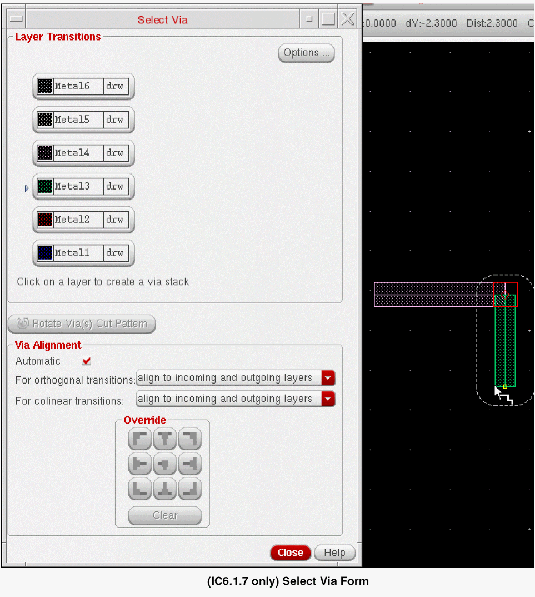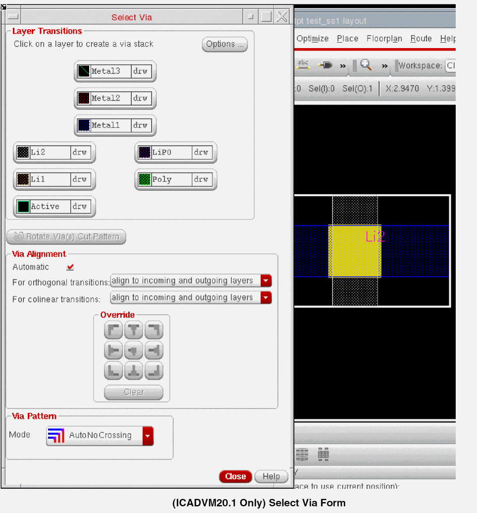 -
While the Select Via form is open, you can click other target layers.
Clicking more than one target layer until a via is digitized creates a via stack. At this point, you can do one of the following: -
To specify the via definition and
cutClass, click the Options button. The Select Via Options form appears as shown in the following figure. For more information about the override variant parameters, cut class and the via definition values, see Override Variant Parameters, Cut Class and Via Definitions in the Create Via Options Form in the Virtuoso Layout Suite documentation.
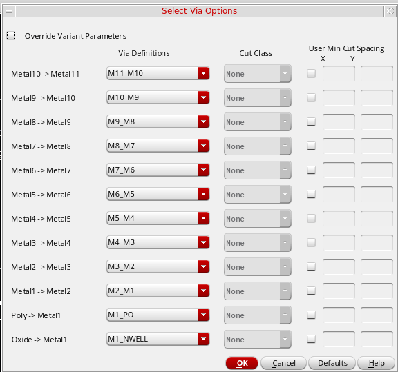 - In the Select Via form, click the Rotate Via(s) Cut Pattern button to rotate the via shape.
-
In the Via Alignment section, select the Automatic check box. The Via Alignment options are also available on the right-click context menu.Notice that the via now aligns to one side of the existing pathSeg.
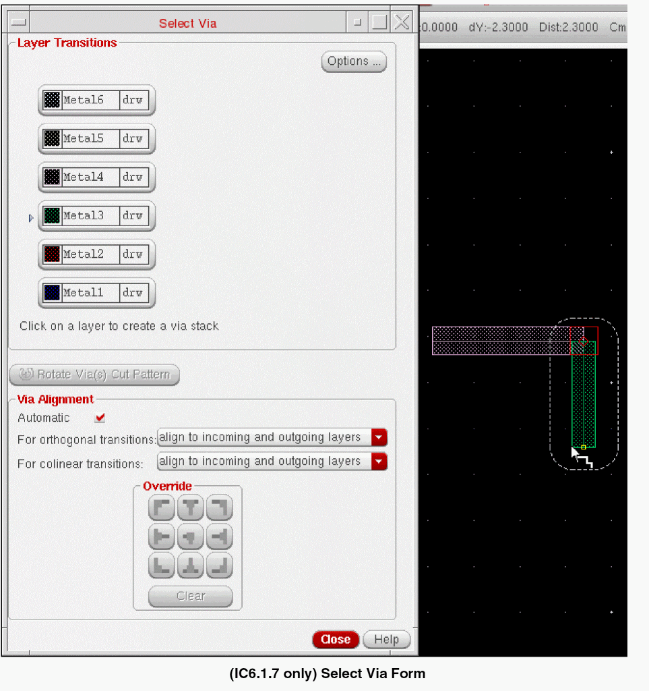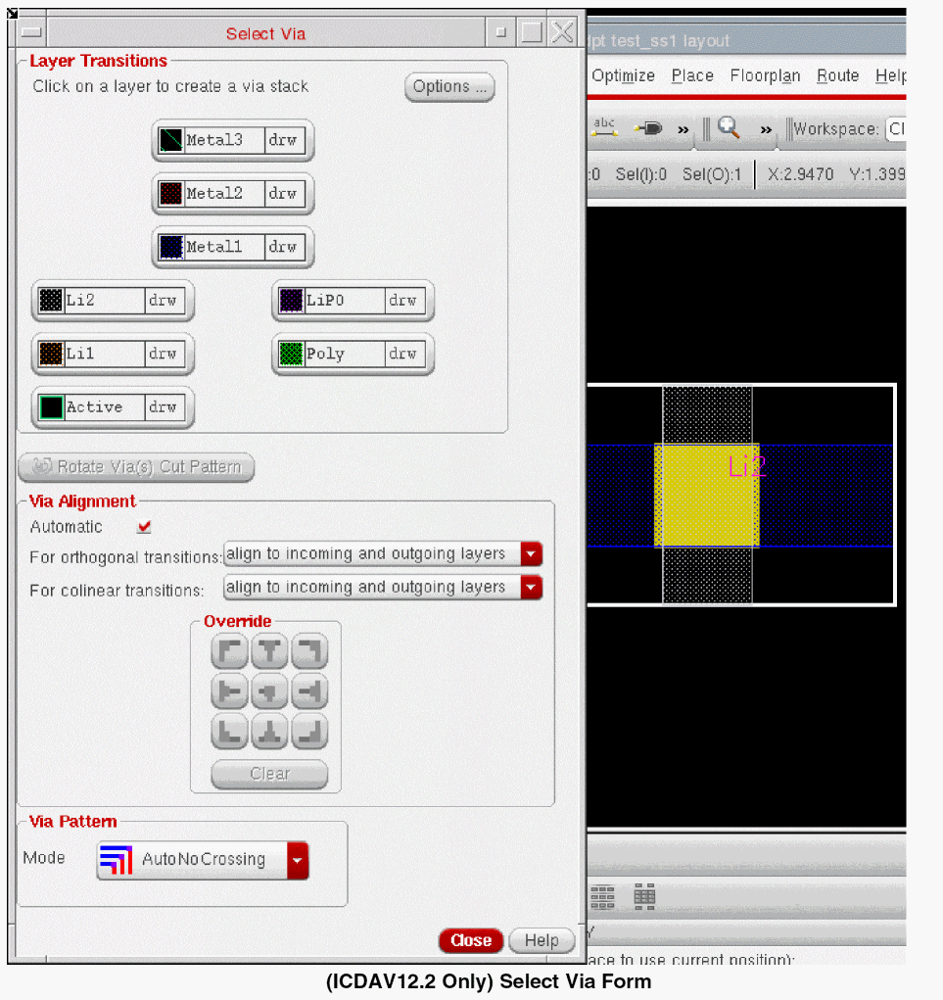 -
In the design window, click at a point to digitize the via location.
The Select Via form closes. Notice the change in the via alignment with respect to the existing pathSeg when you move the pointer to either direction of the pathSeg. - Digitize a few wire points.
-
Right-click to select Select Via or press the
Spacebarkey.
The Select Via form appears. - In the first column, click the target layer button to indicate the layer you want to change the wire to. In the second column, select one of the available vias from the cyclic field.
-
In the Override section, click one of the custom alignment buttons. The Via Alignment options are also available on the right-click context menu. Alternatively, you can press the
Ctrlkey and scroll the mouse wheel up or down to cycle through the via alignment values.
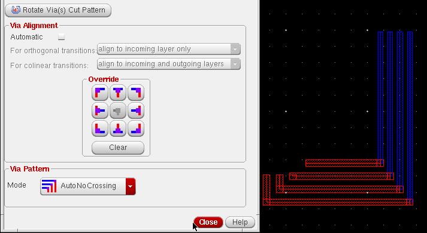 -
In the design display area, click at a point to digitize the via location.
The Select Via form closes. Notice the via alignment stays constant with respect to the existing pathSeg when you move the pointer to either direction of the pathSeg. - Digitize a few wire points.
-
Complete the command by pressing
Esc.
The figure below shows the resultant of using automatic and custom via alignment options.
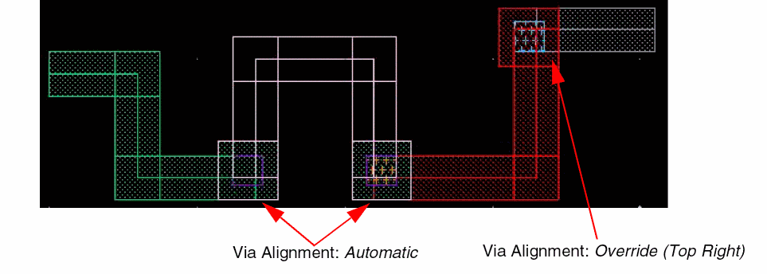
If only one layer and one via are available for selection, you can press the Spacebar key to place the vias. The layer changes to the only available layer. If the current routing layer has more than one layer available for selection, the Select Via form opens where you can choose a layer or via type. For more information, refer to Using the Select Via Form.
Inserting Vias Automatically
The Create Wire command now supports automatic insertion of vias. When a wire which is being created overlaps with same net of wires and between wire and a top-level pin or instance pin, a via is inserted automatically.
t.I) By using the Create Wire command.
- To start the Create Wire command, choose Create – Wiring – Wire.
- While creating the wire press F3. The Create Wire form appears.
- In the Create Wire form, specify the net name in the Net Name field.
-
After the connectivity for the wire is specified, create the wire on the
Metal1layer. -
Now, select
Metal2layer and again start the Create Wire command. -
Specify the same net connectivity for the wire created on
Metal2layer as you had specified for the wire created onMetal1layer in the Net Name field of the Create Wire form. -
Now, create the wire on the
Metal2layer such that it overlaps the wire created onMetal1layer. A via is inserted automatically on the overlap wires of the same net, as shown in the following figure.
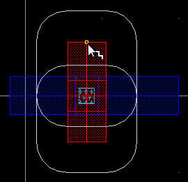A via stack is inserted when a wire onMetal1layer overlaps with the wire onMetal3layer. The following figure shows the via stack created onMetal1-Metal3layer.
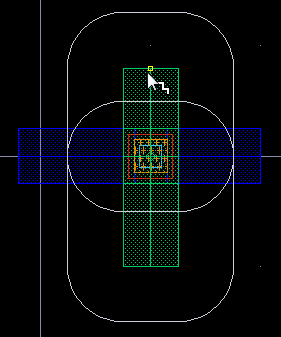
When a wire on Metal1 layer collinear overlaps with a wire on Metal3 layer on the same net, a via is inserted automatically and is stretched so that the overlap area is filled with via cuts.
Similarly, a via is automatically inserted on a top-level pin or an instance pin when a wire intersets or overlaps the pin. The following figure shows the via stack created between Metal1-Metal4 layer when a wire on Metal1 layer overlaps with the top-level pin on Metal4 layer.
II) By using the Create Bus command
The Create Bus command also supports automatic insertion of vias. When a bus that is being created overlaps with same net of bus bits and between bus and a top-level pin or an instance pin, a via is inserted automatically. The following figure shows an example when a via is automatically inserted between the bus on Metal1-Metal2 layer when a bus being created on Metal1 layer overlaps with the bus that exists on Metal2 layer.
You can slide the bus bits along with the vias. To slide the bus bits, hold the Shift+Ctrl keys and move the mouse pointer to the right or left of the current position. The following figure shows the change in the via position when the bus bits slides from left to the right.
III) By using the Stretch command.
The Stretch command also supports automatic insertion of vias. The following figures shows that when stretching a wire which overlaps with same net of wires, a via is inserted automatically.
Fanning Out Wires to Vias
When wires are at the minimum wire spacing but the via spacings are larger, the wires can either be fanned out to connect to the vias in the specified
Using Via Assistance
Via assistant helps determine a legal via site location where you can add a via during routing and not violate design clearance rules.
-
The Create Via constraint group in the Options – Editor form must contain the constraints
horizontalPitchandverticalPitch. For example,routingGrids( ( horizontalPitch "metal1" 2.4 ) ( verticalPitch "metal1" 2.4 )
- Interactive Mode must be set to Enforce in the Options – DRD Edit form.
- The last digitized point of the wire being routed must be off the routing grid.
Creating an Array of Vias
The spacing of cut layers and the minimum number of cuts allowed in a via array can be defined in the technology file. For more information, see viaSpacing and minNumCut.
Only standard vias can be automatically arrayed to the width of the wire. The number of rows and columns in the array are determined by the width of the wire. The following example display standard via arrays placed on wires.
The figure below shows an array of standard vias placed at a ninety degree intersection of layers.
The software determines the number of cuts that are required based on the width of the wire. The technology file standard via definition allows you to specify the default number of cuts for a via, however, this value is overridden by the number of columns and rows needed for the width of the wire currently being created. For example, if the default number of cuts is 2x2 but the wire width is less than the width of a 2x2 via array, a single via cut is placed on the wire.
Stacking Vias
The via stacking limit for specified layers and the minimum area allowed for stacked vias can be defined in the technology file. For more information, see viaStackingLimits.
To stack vias, do the following:
- Choose Create – Wiring – Wire.
-
From the right-click context menu, choose Select Via.
The Select Via form appears, which displays all the available vias and routing layers that can be reached from the current routing layer. -
Set the default via for each layer. For each layer, choose the desired via for a target layer from the cyclic field beside each layer.
You can change any number of defaults before clicking on a layer button. You can also raise the Select Via form, change the default vias and click OK without selecting a via.In most cases your design rules require you to place vias with extended overlaps when stacking vias. If theminAreaconstraint is set in the technology file, a via with enclosures that meet theminAreaconstraint requirements is placed for intermediate vias. See Minimum Area Rules. -
From the Select Via form select the desired nonadjacent layer.
To cancel any pending vias, click the current layer button. You can rotate pending vias by pressing the right mouse button. This is reflected in the button prompt text in the CIW and on the layout window. -
Move the pointer and click to place the via stack.
Via stacking adheres to the stack via depth rule,maxStackVias.
Inserting Multi-Layer Stack Via
The Create Wire lets you instantiate the multi-layer stack via and allows the wire to exit on any layer of the stack via.
To create multi-layer stack via, do the following:
- Choose Create – Wiring – Wire.
- Start creating the wire by digitizing the wire points.
- Right-click to select Via Up To <layer name> or Via Down To <layer name> to change the wire layer to a higher or lower layer, respectively.
-
Move the pointer and click to place the via.
The following figure shows how theM1-M2via is inserted.
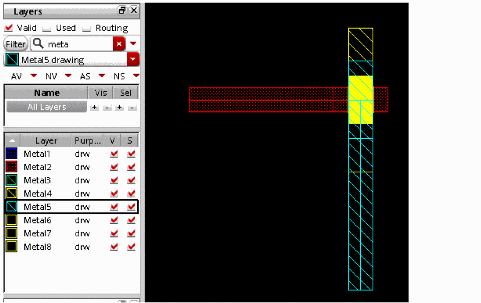You can also insert a via stack between the metal layers. Consider a case when a stacked via is created betweenmetal1andmetal4layers. The stacked via includes themetal2andmetal3layers as well. In this case, you start a wire onmetal1then do Via Down To and selectmetal4. TheM1-M4via is inserted. After you insert the via, you can choose the desired target layer on which the wire should exit. To do this. select the target layer from the Palette. The following figures shows a scenario where aM1-M4via is inserted but the wire exits on themetal3layer.
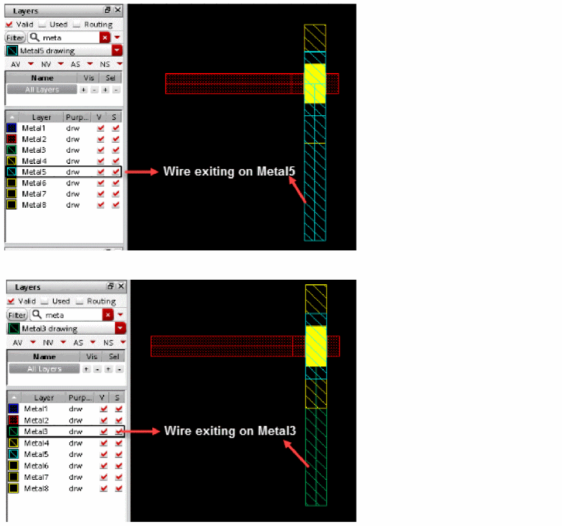
Minimum Area Rules
Extended overlaps (vias with the area of the bottom layer expanded) for stacked vias are used to satisfy minimum area rules (MAR) for intermediate metal.
Changing Via Cut Color
You can now manually change the via cut color for interactive routing commands. The via cut color is supported only for single cut via and for single via stack.
To enable via cut coloring, specify the environment variable. When the environment variable is specified, the Cycle Cut Color option is available in the Create Wire, Create Bus, and Create Stranded Wire context-sensitive menu.
- Choose Create – Wiring – Wire.
- From the Layers assistant, select a layer on which you want to create the wire.
- To start creating a wire, click at a point in the design display area to digitize the wire.
- Right-click and select Via Up To <layer name> or Via Down To <layer name> to insert a via.
- To change the via cut color, place the mouse pointer on the Via option in the Create Wire context-sensitive menu. The Via submenu is displayed.
-
Click the Cycle Cut Color option. The cycle color option is used to change the via cut color. The specified pattern is not affected.
The following figure shows that the via cut color is changed in the via that has been inserted on the wire.
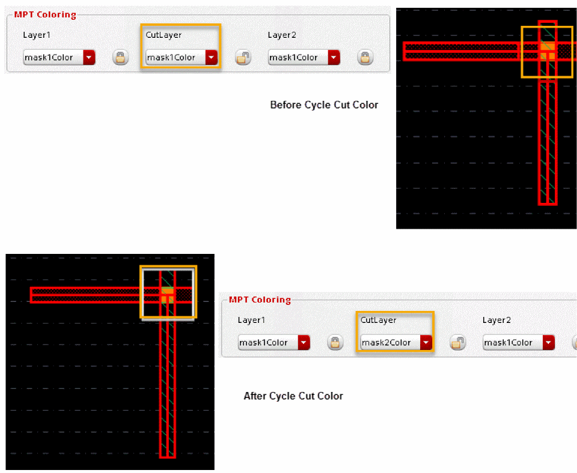
Similarly, you can also change the via cut color for the Create Bus command. For Create Bus, the via matrix is a row of cut classes. Following are the available via cut color patterns.
;; alternate row: row
;; alternate col: col or colunm
;; chessboard: chess or chessboard
;; all others value or no value give uniform cut pattern
The Create Stranded Wire command also supports via cut coloring. By default, via cut pattern is uniform. However, you can change the cut pattern by specifying the weViaCutColorPatterns (ICADVM20.1 Only) environment variable. For example:
envSetVal("layout" "weViaCutColorPatterns" 'string "Via2 row : Via3 col")
The following figure shows the via cut pattern for the Create Stranded Wire command, where Via2 follows the row pattern and Via3 follows the column pattern.
Return to top